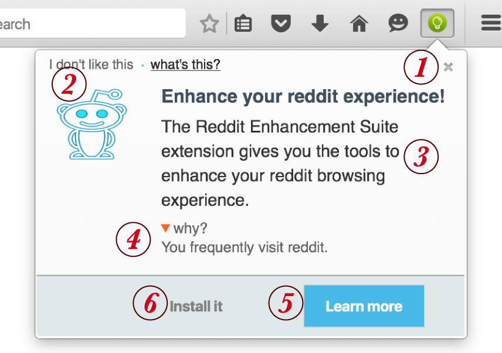

Feature Recommender recommends features or extensions that are likely to be useful for you based on how you use Firefox. This tool is experimental and will be automatically removed from your Firefox after a period of time.
The picture below shows different parts of a recommendation notification.
1
Hides the notification.2
Let's you tell us why you don't like this notification.3
Gives a brief description of this feature4
Briefly tells you why it thinks you might like this feature.5
Click to learn more about the feature.6
Let's you install or try it right from the notification!Note that Feature Recommender is a temporary tool and will be automatically removed after a period of time. But if you still want to disable it, click here to see the instructions.